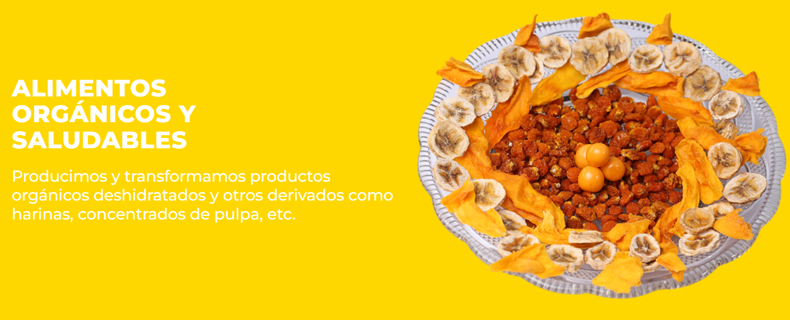

Alimentos orgánicos y saludables
Cada uno de nuestros productos nace de una cuidadosa selección de materias primas. Transformamos estos superalimentos mediante procesos que buscan preservar sus propiedades naturales y valor nutricional, garantizando en cada etapa su calidad e inocuidad.


Aguaymanto deshidratado
Superfruta andina deshidratada con sabor agridulce y aroma frutal. Es fuente de vitamina C, vitamina A, fibra, minerales y compuestos antioxidantes, que forman parte de una alimentación equilibrada. Su consumo contribuye al funcionamiento normal del sistema inmunológico, al cuidado de la salud visual, al adecuado funcionamiento digestivo y a la protección de las células frente al estrés oxidativo.

Mango deshidratado
Fruta tropical que tiene un sabor dulce y aroma tropical intenso rica en vitamina C, vitamina A, fibra, y compuestos antioxidantes. Ayuda al funcionamiento normal del sistema inmunológico, salud visual, buen funcionamiento digestivo y a la protección de las células frente al estrés oxidativo.

Plátano deshidratado
Fruta tropical dulce y nutritiva, aroma agradable, rica en potasio, vitaminas B6, vitamina C y fibra. Promueve la energía, ayuda al funcionamiento normal de los músculos y del sistema nervioso, al adecuado funcionamiento digestivo y al mantenimiento de una alimentación equilibrada.

Fresa deshidratada
Fruta deshidratada de sabor dulce y ligeramente ácido, aroma fresco y agradable, es fuente de vitamina C, fibra, potasio y compuestos antioxidante. Ayuda al buen funcionamiento del sistema inmunológico, al adecuado funcionamiento digestivo y a la protección de las células frente al estrés oxidativo.

Piña deshidratada
Fruta deshidratada con sabor dulce con un agradable toque ácido, aroma tropical intenso. Es fuente de vitamina C, fibra, manganeso y compuestos antioxidantes. Ayuda al buen funcionamiento normal del sistema inmunológico y digestiva.
¿Requieres fichas técnicas o pedidos especiales de exportación?
Abastecemos a empresas de alimentos, distribuidores e importadores internacionales con volúmenes al por mayor bajo las más rigurosas certificaciones mundiales.
Solicitar Información Comercial